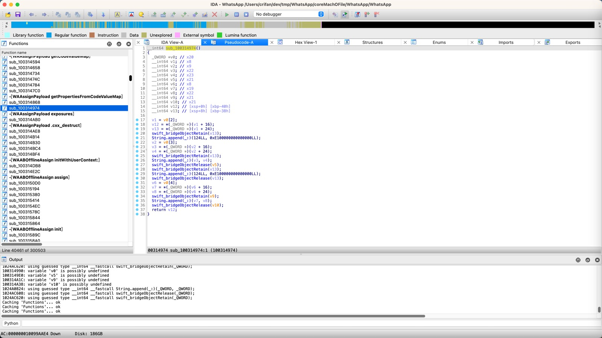
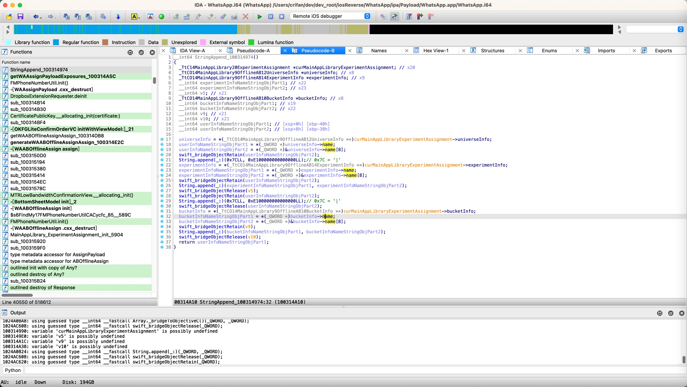

逆向前后对比
逆向之前
IDA伪代码
最初的IDA的相关伪代码，优化之前，是：
__int64 sub_100314974()
{
_QWORD *v0; // x20
__int64 v1; // x8
__int64 v2; // x9
__int64 v3; // x22
__int64 v4; // x23
__int64 v5; // x21
__int64 v6; // x8
__int64 v7; // x19
__int64 v8; // x22
__int64 v9; // x21
__int64 v10; // x21
__int64 v12; // [xsp+0h] [xbp-40h]
__int64 v13; // [xsp+8h] [xbp-38h]
v1 = v0[2];
v12 = *(_QWORD *)(v1 + 16);
v13 = *(_QWORD *)(v1 + 24);
swift_bridgeObjectRetain(v13);
String.append(_:)(124LL, 0xE100000000000000LL);
v2 = v0[3];
v3 = *(_QWORD *)(v2 + 16);
v4 = *(_QWORD *)(v2 + 24);
swift_bridgeObjectRetain(v13);
String.append(_:)(v3, v4);
swift_bridgeObjectRelease(v5);
swift_bridgeObjectRetain(v13);
String.append(_:)(124LL, 0xE100000000000000LL);
swift_bridgeObjectRelease(v13);
v6 = v0[4];
v7 = *(_QWORD *)(v6 + 16);
v8 = *(_QWORD *)(v6 + 24);
swift_bridgeObjectRetain(v9);
String.append(_:)(v7, v8);
swift_bridgeObjectRelease(v10);
return v12;
}

逆向后
IDA伪代码
逆向后，经过分析，优化之后的：IDA伪代码：
__int64 StringAppend_100314974()
{
_TtC14MainAppLibrary20ExperimentAssignment *curMainAppLibraryExperimentAssignment; // x20
_TtCO14MainAppLibrary9OfflineAB12UniverseInfo *universeInfo; // x8
_TtCO14MainAppLibrary9OfflineAB14ExperimentInfo *experimentInfo; // x9
__int64 experimentInfoNameStringObjPart1; // x22
__int64 experimentInfoNameStringObjPart2; // x23
__int64 v5; // x21
_TtCO14MainAppLibrary9OfflineAB10BucketInfo *bucketInfo; // x8
__int64 bucketInfoNameStringObjPart1; // x19
__int64 bucketInfoNameStringObjPart2; // x22
__int64 v9; // x21
__int64 v10; // x21
__int64 userInfoNameStringObjPart1; // [xsp+0h] [xbp-40h]
__int64 userInfoNameStringObjPart2; // [xsp+8h] [xbp-38h]
universeInfo = *(_TtCO14MainAppLibrary9OfflineAB12UniverseInfo **)curMainAppLibraryExperimentAssignment->universeInfo;
userInfoNameStringObjPart1 = *(_QWORD *)universeInfo->name;
userInfoNameStringObjPart2 = *(_QWORD *)&universeInfo->name[8];
swift_bridgeObjectRetain(userInfoNameStringObjPart2);
String.append(_:)(0x7CLL, 0xE100000000000000LL);// 0x7C = '|'
experimentInfo = *(_TtCO14MainAppLibrary9OfflineAB14ExperimentInfo **)curMainAppLibraryExperimentAssignment->experimentInfo;
experimentInfoNameStringObjPart1 = *(_QWORD *)experimentInfo->name;
experimentInfoNameStringObjPart2 = *(_QWORD *)&experimentInfo->name[8];
swift_bridgeObjectRetain(userInfoNameStringObjPart2);
String.append(_:)(experimentInfoNameStringObjPart1, experimentInfoNameStringObjPart2);
swift_bridgeObjectRelease(v5);
swift_bridgeObjectRetain(userInfoNameStringObjPart2);
String.append(_:)(0x7CLL, 0xE100000000000000LL);// 0x7C = '|'
swift_bridgeObjectRelease(userInfoNameStringObjPart2);
bucketInfo = *(_TtCO14MainAppLibrary9OfflineAB10BucketInfo **)curMainAppLibraryExperimentAssignment->bucketInfo;
bucketInfoNameStringObjPart1 = *(_QWORD *)bucketInfo->name;
bucketInfoNameStringObjPart2 = *(_QWORD *)&bucketInfo->name[8];
swift_bridgeObjectRetain(v9);
String.append(_:)(bucketInfoNameStringObjPart1, bucketInfoNameStringObjPart2);
swift_bridgeObjectRelease(v10);
return userInfoNameStringObjPart1;
}

代码逻辑
经过分析和调试，以及代码优化后，就真正的，完全的，彻底的搞懂了代码逻辑。
然后就可以分析和整理出函数的逻辑了：
StringAppend_100314974- 输入：
MainAppLibrary.ExperimentAssignment的实例 - 处理过程
- 获取
MainAppLibrary.ExperimentAssignment的universeInfo- 再获取
universeInfo的name- 其是
Swift的（Native）Large String
- 其是
- 再获取
- 去拼接上：
"|"- 其是个
Swift的small string
- 其是个
- 继续类似逻辑
- 获取
MainAppLibrary.ExperimentAssignment的experimentInfo- 再获取
experimentInfo的name- 其是
Swift的Large String
- 其是
- 再获取
- 拼接
"|" - 获取
MainAppLibrary.ExperimentAssignment的bucketInfo- 再获取
bucketInfo的name- 其是
Swift的Small String
- 其是
- 再获取
- 获取
- 最终得到拼接后的最终的字符串
- 获取
- 处理逻辑概述：用
universeInfo、experimentInfo、bucketInfo的name，中间加上|，拼接后的字符串 - 输出=返回值：
- 最终拼接后的字符串
- 举例
"dummy_aa_offline_rid_universe_ios|dummy_aa_offline_rid_experiment_ios|control"
- 输入：
如此，实现了：
通过静态分析（IDA的汇编代码和伪代码、class-dump导出的头文件、导出的字符串等资源）和动态调试（Xcode、lldb、iOSOpenDev插件hook代码等），加上此处特定的，Swift的String的Append函数以及String的内部类型和逻辑（String分Small String和Large String），最终才彻底搞懂代码逻辑，以及去优化IDA伪代码为，最终的代码，人类能看懂的代码。